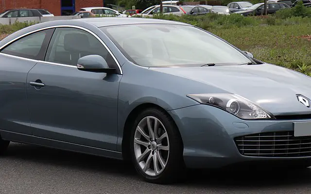

Par Motor › Precios por modelo › Renault Laguna
Precio de segunda mano · noviembre de 2026¿Cuánto vale un Renault Laguna de segunda mano?

Precio justo estimado de un Renault Laguna usado en España, año por año, con los kilómetros normales para su edad y en buen estado: de 2.700 € a 11.100 €. Para tasar el tuyo con sus kilómetros reales y su estado, usa el tasador gratis.
Precios del Renault Laguna por año
Laguna II (2001–2007)
Precio de nuevo: 1.9 dCi 120 CV, 23.000 € · 1.8 120 CV, 21.000 € · 2.0 135 CV, 23.000 €
| Año | Km normales | 1.9 dCi 120 CV · Diésel | 1.8 120 CV · Gasolina | 2.0 135 CV · Gasolina |
|---|---|---|---|---|
| 2007 | 100.000 km | 4.800 € | 4.500 € | 5.000 € |
| 2006 | 100.000 km | 4.400 € | 4.200 € | 4.600 € |
| 2005 | 100.000 km | 4.100 € | 3.800 € | 4.200 € |
| 2004 | 100.000 km | 3.700 € | 3.500 € | 3.900 € |
| 2003 | 100.000 km | 3.400 € | 3.200 € | 3.600 € |
| 2002 | 100.000 km | 3.200 € | 3.000 € | 3.300 € |
| 2001 | 100.000 km | 2.900 € | 2.700 € | 3.000 € |
Laguna III (2007–2015)
Precio de nuevo: 2.0 140 CV, 24.000 € · 1.5 dCi 110 CV, 24.000 € · 2.0 dCi 150 CV, 27.000 €
| Año | Km normales | 2.0 140 CV · Gasolina | 1.5 dCi 110 CV · Diésel | 2.0 dCi 150 CV · Diésel |
|---|---|---|---|---|
| 2015 | 100.000 km | 9.600 € | 9.800 € | 11.100 € |
| 2014 | 100.000 km | 9.200 € | 9.000 € | 10.200 € |
| 2013 | 100.000 km | 8.600 € | 8.300 € | 9.300 € |
| 2012 | 100.000 km | 7.900 € | 7.600 € | 8.600 € |
| 2011 | 100.000 km | 7.200 € | 7.000 € | 7.900 € |
| 2010 | 100.000 km | 6.700 € | 6.500 € | 7.300 € |
| 2009 | 100.000 km | 6.100 € | 5.900 € | 6.700 € |
| 2008 | 100.000 km | 5.600 € | 5.500 € | 6.100 € |
| 2007 | 100.000 km | 5.200 € | 5.000 € | 5.700 € |
Kilómetros normales: 15.000 al año en gasolina, híbridos y eléctricos, y 20.000 en diésel, con un máximo de 100.000 km (por encima no tasamos: el precio depende demasiado del historial de cada coche). Cifras redondeadas a 100 €.
Preguntas frecuentes
¿Cuánto vale un Renault Laguna de segunda mano?
Según el año, la versión y los kilómetros, un Renault Laguna usado vale hoy de 2.700 € a 11.100 € en España. El más barato de nuestra tabla es un 1.8 de 2001 (2.700 €) y el más caro un 2.0 dCi de 2015 (11.100 €). Son precios justos estimados entre particulares y profesionales, con los kilómetros normales para su edad y en buen estado.
¿Cuánto valor pierde un Renault Laguna al año?
Con unos años encima, un Renault Laguna pierde alrededor de un 8 % de su valor cada año (calculado sobre el 2.0 de la generación Laguna III). Los primeros años la caída es mayor y a partir de los 70.000 km se acelera.
¿Qué motorizaciones tiene el Renault Laguna?
En nuestra base de datos hay versiones diésel y gasolina, en 2 generaciones: Laguna II y Laguna III.
¿Cómo sé si me piden demasiado por un Renault Laguna?
Abre el tasador de Par Motor, elige el Renault Laguna, el año y los kilómetros reales, y escribe lo que te piden. Te diremos si está por debajo del precio justo (chollo) o por encima (caro). Es gratis y no pide registro ni matrícula.
Otros Renault
- Arkana
- Austral
- Captur
- Clio
- Espace
- Fluence
- Kadjar
- Kangoo
- Koleos
- Mégane
- Mégane E-Tech
- Rafale
- Renault 4
- Renault 5
- Scénic
- Symbioz
- Talisman
- Twingo
- Zoe
Compara su coste real
El precio de compra es solo una parte. Mira cuánto te costaría al mes con combustible, seguro, neumáticos, mantenimiento y lo que pierde de valor.
Abrir el comparador →